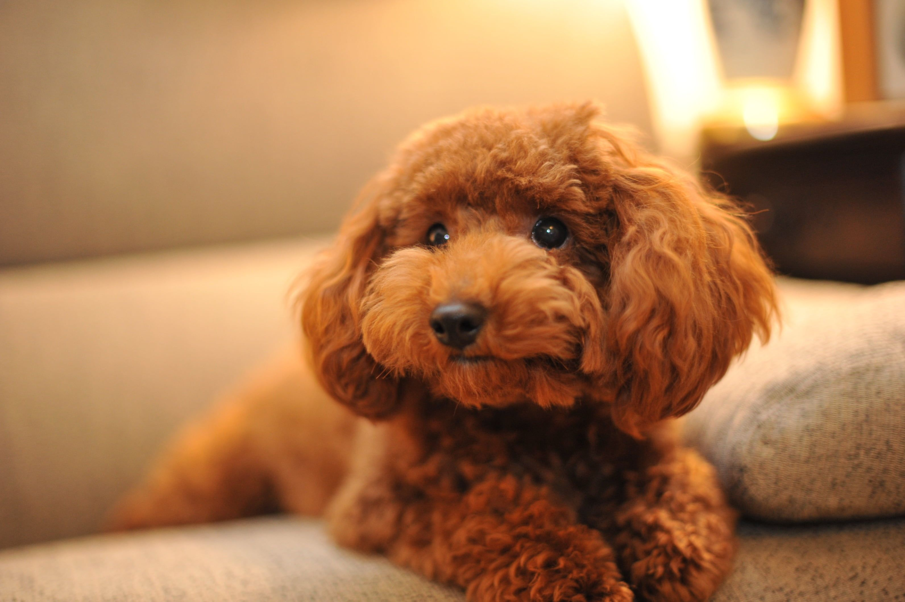

Я расскажу вам:
- о том кто такая Рю
- о том как мне её подарили
- о том как сильно она ме нужна
- о том как я провожу с ней время
Всем привет! Мою собаку зовут Рю это Корейская кличка, она породы карликовый пудель. Рю очень милая, умная и красивая. Она рыжего окраса, она очень любит гулять, стоит сказать это слово и она тудже идёт искать шлейку и поводок.
Ну а про то как я играю с Рю в её игрушки и за день не рассказать. Рюша тагже любит есть свой корм и иногда даже скребёт лапой свои миски.
Мне подарили Рю 05.10.2023 она у меня уже почти год.Нас с братом папа будет утром 5 октября и говорит кто найдёт маму тот получит сюрприз. Мы заходим в комнату мамы и папы и видим чудо:там стоит маленькая рыжая собака.
Для меня Рю это такойже член семьи как и я. Она мне очень нужна. Ведь когда мне грусто она меня может полизать, погладить лапкой и даже лечь рядом или же на колени.
Всегда когда я прихожу домой меня встречает радостная рыжая собачка. Иногда когда мне скучно, я могу взять Рюшину игрушку и по играть.
Проще говоря Рюшка это озарная девчушка.